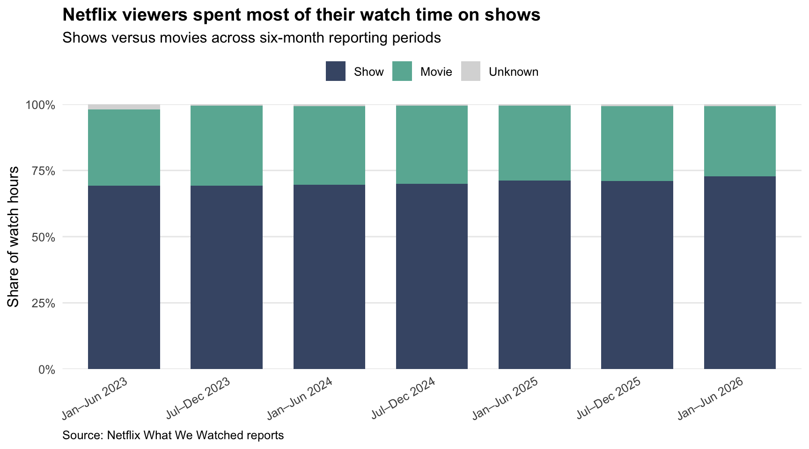

Code
library(tidyverse)
library(rvest)
library(readxl)
library(fs)
library(gt)
library(skimr)Pratistha Regmi
What keeps people watching Netflix—a new season of a favorite show, a movie, or a live event? In this project, I explore Netflix’s What We Watched reports from January 2023 through June 2026. I compare viewing patterns across titles and reporting periods, then use those findings to consider Netflix’s content priorities for 2027 and beyond.
load_netflix_data <- function(){
# Note to students: Make sure you have installed the tidyverse and fs packages
# before beginning this assignment. If you aren't sure,
# simply run `library(tidyverse)` at your R Console and, if
# you don't see an error message, `tidyverse` has been
# installed. (Same for `fs`) If you still need to install
# either package, use the `install.packages` function as
# demonstrated in class.
library(tidyverse)
library(rvest)
library(readxl)
library(fs)
data_dir <- path("data", "mp01")
if(!dir_exists(data_dir)){
dir_create(data_dir, showWarnings=FALSE, recurse=TRUE)
}
NETFLIX_URLS <- list(
`2023H1` = "https://about.netflix.com/news/what-we-watched-a-netflix-engagement-report",
`2023H2` = "https://about.netflix.com/news/what-we-watched-the-second-half-of-2023",
`2024H1` = "https://about.netflix.com/news/what-we-watched-the-first-half-of-2024",
`2024H2` = "https://about.netflix.com/news/what-we-watched-the-second-half-of-2024",
`2025H1` = "https://about.netflix.com/news/what-we-watched-the-first-half-of-2025",
`2025H2` = "https://about.netflix.com/news/what-we-watched-the-second-half-of-2025",
`2026H1` = "https://about.netflix.com/news/what-we-watched-the-first-half-of-2026"
)
download_if_needed <- function(url, local){
if(!file_exists(local)){
download.file(url, local, quiet = TRUE, mode = "wb")
}
return(local)
}
NETFLIX_URLS |>
map(read_html) |>
map(html_element, xpath = "//a[contains(@href, '.xlsx')]") |>
map_chr(html_attr, "href") |>
enframe("period", "url") |>
mutate(path = path(data_dir, paste0(period, ".xlsx")),
path = map2(url, path, download_if_needed),
data = map(path, function(file) {
map_dfr(excel_sheets(file), function(sheet_name) {
read_excel(
file,
sheet = sheet_name,
skip = 3,
na = "*"
) |>
mutate(`Release Date` = as.Date(`Release Date`))
})
}),
data = map(data, \(x) x |> mutate(`Release Date` = as.Date(`Release Date`)))) |>
unnest(data) |>
select(-url, -path) |>
mutate(year=str_sub(period, 1, 4),
half=str_sub(period, start=6),
period_start = make_date(year, if_else(half==1, 1, 7), 1),
period_end = make_date(year, if_else(half==1, 6, 12), if_else(half==1, 30, 31))) |>
filter(!is.na(`Hours Viewed`)) |>
mutate(live_event = !is.na(Runtime) & str_detect(Runtime, "\\d+:\\d+\\*"),
clean_time = str_remove(Runtime, fixed("*")),
Runtime = 60 * hour(hm(clean_time)) + minute(hm(clean_time))) |>
select(-clean_time) |>
mutate(Runtime = coalesce(Runtime, mean(Runtime, na.rm=TRUE)),
.by=Title,
Title = stringi::stri_trans_general(Title, "Latin-ASCII"),
Title = str_remove(Title, " // .*"),
Title = str_remove(Title, "[^[:ascii:]].*"),
Title = str_trim(Title)) |>
filter_out(Title == "") |>
select(year,
period,
period_start,
period_end,
Title,
-half,
Runtime,
Views,
`Hours Viewed`,
`Release Date`,
`Available Globally?`,
live_event)
}
NETFLIX_DATA <- load_netflix_data()NETFLIX_DATA <- NETFLIX_DATA |>
rename(
title = Title,
runtime = Runtime,
views = Views,
hours_viewed = `Hours Viewed`,
release_date = `Release Date`,
available_globally = `Available Globally?`
)
NETFLIX_DATA <- NETFLIX_DATA |>
filter(!title %in% c("Other Shows", "Other Movies"))
names(NETFLIX_DATA) [1] "year" "period" "period_start"
[4] "period_end" "title" "runtime"
[7] "views" "hours_viewed" "release_date"
[10] "available_globally" "live_event" Before looking at viewing patterns, I checked how the data is organized and whether any information is missing. I used glimpse() to look at the columns, their data types, and some example values. Then I used skim() to get a more detailed summary. The tables below are grouped by data type, which is why they have labels like “character,” “Date,” “logical,” and “numeric.”
Rows: 115,845
Columns: 11
$ year <int> 2023, 2023, 2023, 2023, 2023, 2023, 2023, 2023, 202…
$ period <chr> "2023H1", "2023H1", "2023H1", "2023H1", "2023H1", "…
$ period_start <date> 2023-01-01, 2023-01-01, 2023-01-01, 2023-01-01, 20…
$ period_end <date> 2023-06-30, 2023-06-30, 2023-06-30, 2023-06-30, 20…
$ title <chr> "The Night Agent: Season 1", "Ginny & Georgia: Seas…
$ runtime <dbl> 491, 587, 856, 409, 389, 497, 2703, 533, 548, 428, …
$ views <dbl> NA, NA, NA, NA, NA, NA, NA, NA, NA, NA, NA, NA, NA,…
$ hours_viewed <dbl> 812100000, 665100000, 622800000, 507700000, 5030000…
$ release_date <date> 2023-03-23, 2023-01-05, 2022-12-30, 2022-11-23, 20…
$ available_globally <lgl> TRUE, TRUE, TRUE, TRUE, TRUE, TRUE, FALSE, TRUE, TR…
$ live_event <lgl> FALSE, FALSE, FALSE, FALSE, FALSE, FALSE, FALSE, FA…| Name | NETFLIX_DATA |
| Number of rows | 115845 |
| Number of columns | 11 |
| _______________________ | |
| Column type frequency: | |
| character | 2 |
| Date | 3 |
| logical | 2 |
| numeric | 4 |
| ________________________ | |
| Group variables | None |
Variable type: character
| skim_variable | n_missing | complete_rate | min | max | empty | n_unique | whitespace |
|---|---|---|---|---|---|---|---|
| period | 0 | 1 | 6 | 6 | 0 | 7 | 0 |
| title | 0 | 1 | 1 | 217 | 0 | 31954 | 0 |
Variable type: Date
| skim_variable | n_missing | complete_rate | min | max | median | n_unique |
|---|---|---|---|---|---|---|
| period_start | 0 | 1.00 | 2023-01-01 | 2026-01-01 | 2024-07-01 | 7 |
| period_end | 0 | 1.00 | 2023-06-30 | 2026-06-30 | 2024-12-31 | 7 |
| release_date | 78746 | 0.32 | 2010-04-01 | 2026-06-29 | 2021-08-03 | 2520 |
Variable type: logical
| skim_variable | n_missing | complete_rate | mean | count |
|---|---|---|---|---|
| available_globally | 0 | 1 | 0.28 | FAL: 83096, TRU: 32749 |
| live_event | 0 | 1 | 0.00 | FAL: 115535, TRU: 310 |
Variable type: numeric
| skim_variable | n_missing | complete_rate | mean | sd | p0 | p25 | p50 | p75 | p100 | hist |
|---|---|---|---|---|---|---|---|---|---|---|
| year | 0 | 1.00 | 2024.29 | 1.05 | 2023 | 2023 | 2024 | 2025 | 2026 | ▇▇▁▇▅ |
| runtime | 4599 | 0.96 | 264.76 | 495.15 | 2 | 99 | 120 | 294 | 23853 | ▇▁▁▁▁ |
| views | 18196 | 0.84 | 1471430.33 | 4631109.31 | 100000 | 100000 | 300000 | 1200000 | 481600000 | ▇▁▁▁▁ |
| hours_viewed | 0 | 1.00 | 5687351.20 | 19315514.25 | 100000 | 300000 | 1000000 | 4100000 | 964100000 | ▇▁▁▁▁ |
The prepared data has 115,845 rows and 11 columns. Each row contains a title’s viewing information for a reporting period. Runtime is missing for 4,599 rows, and views are missing for 18,196 rows. Missing information does not mean nobody watched those titles. The prepared data has no missing watch hours because rows without that information were removed during loading.
Release dates are missing for 78,746 rows, which limits what I can say about viewing after a title’s release. Average watch hours per title-period entry are about 5.69 million, compared with a median of 1.00 million. The average is much higher than the median, suggesting that highly watched titles pull the average up.
The viewing data covers January 01, 2023 through June 30, 2026.
The dataset includes 31,954 different shows and movies, counting different seasons separately.
The Bridgerton universe accounts for 4,862,800,000 total hours viewed across the reporting periods.
The main Stranger Things series accounts for 5,615,200,000 total hours viewed across the reporting periods.
titles_2026h1 <- NETFLIX_DATA |>
filter(period == "2026H1") |>
group_by(title) |>
summarize(
total_hours = sum(hours_viewed, na.rm = TRUE),
.groups = "drop"
)
top_ten_hours <- titles_2026h1 |>
arrange(desc(total_hours), title) |>
slice_head(n = 10) |>
summarize(hours = sum(total_hours))
period_hours <- titles_2026h1 |>
summarize(hours = sum(total_hours))
top_ten_share <- top_ten_hours$hours / period_hours$hoursThe Top 10 titles accounted for 4.69% of total reported watch time in the first half of 2026.
availability_by_title <- NETFLIX_DATA |>
group_by(title) |>
summarize(
globally_available = if (all(is.na(available_globally))) {
NA
} else {
any(available_globally, na.rm = TRUE)
},
.groups = "drop"
) |>
summarize(
title_share = mean(globally_available, na.rm = TRUE)
)
availability_by_hours <- NETFLIX_DATA |>
filter(!is.na(available_globally)) |>
summarize(
hours_share =
sum(hours_viewed[available_globally]) / sum(hours_viewed)
)Across the reporting periods, 22.79% of distinct titles with known availability were globally available in at least one period. Globally available content accounted for 49.11% of reported watch hours among records with known availability.
top_titles <- NETFLIX_DATA |>
group_by(period, title) |>
summarize(
title_hours = sum(hours_viewed, na.rm = TRUE),
.groups = "drop"
) |>
group_by(period) |>
mutate(share = title_hours / sum(title_hours)) |>
slice_max(title_hours, n = 1, with_ties = TRUE) |>
ungroup() |>
arrange(period)
top_titles |>
gt::gt() |>
gt::tab_header(
title = "Most-Watched Netflix Title in Each Period",
subtitle = "Ranked by total hours viewed"
) |>
gt::cols_label(
period = "Period",
title = "Top Title",
title_hours = "Hours Viewed",
share = "Share of Period Watch Hours"
) |>
gt::fmt_number(
columns = title_hours,
decimals = 0,
use_seps = TRUE
) |>
gt::fmt_percent(
columns = share,
decimals = 2
) |>
gt::opt_row_striping() |>
gt::tab_source_note(
source_note = "Source: Netflix What We Watched reports. Shares use total reported watch hours within each period. Tied leaders are retained."
)| Most-Watched Netflix Title in Each Period | |||
| Ranked by total hours viewed | |||
| Period | Top Title | Hours Viewed | Share of Period Watch Hours |
|---|---|---|---|
| 2023H1 | The Night Agent: Season 1 | 812,100,000 | 0.87% |
| 2023H2 | King the Land: Limited Series | 630,200,000 | 0.70% |
| 2024H1 | Bridgerton: Season 3 | 733,800,000 | 0.78% |
| 2024H2 | Squid Game: Season 2 | 619,900,000 | 0.66% |
| 2025H1 | Squid Game: Season 2 | 840,300,000 | 0.88% |
| 2025H2 | Wednesday: Season 2 | 964,100,000 | 1.01% |
| 2026H1 | Bridgerton: Season 4 | 889,800,000 | 0.92% |
| Source: Netflix What We Watched reports. Shares use total reported watch hours within each period. Tied leaders are retained. | |||
The top title in each period accounted for around 0.66% to 1.01% of reported watch hours. Wednesday: Season 2 had the highest total among these winners, with 964.1 million hours in the second half of 2025. I also noticed that Squid Game: Season 2 led in two consecutive periods, suggesting its popularity continued beyond a single reporting window.
catalog_size <- NETFLIX_DATA |>
group_by(period) |>
summarize(
number_of_titles = n_distinct(title),
runtime_hours = sum(runtime, na.rm = TRUE) / 60,
missing_runtime = sum(is.na(runtime)),
.groups = "drop"
) |>
arrange(period)
catalog_size |>
gt::gt() |>
gt::tab_header(
title = "Netflix’s Reported Catalog Over Time",
subtitle = "Number of titles and total known content runtime"
) |>
gt::cols_label(
period = "Period",
number_of_titles = "Number of Titles",
runtime_hours = "Known Runtime (Hours)",
missing_runtime = "Titles Missing Runtime"
) |>
gt::fmt_number(
columns = c(number_of_titles, runtime_hours, missing_runtime),
decimals = 0,
use_seps = TRUE
) |>
gt::opt_row_striping() |>
gt::tab_source_note(
source_note = "Source: Netflix What We Watched reports. Seasons are counted separately. Missing runtime values are excluded from runtime totals. These figures describe titles included in the reports."
)| Netflix’s Reported Catalog Over Time | |||
| Number of titles and total known content runtime | |||
| Period | Number of Titles | Known Runtime (Hours) | Titles Missing Runtime |
|---|---|---|---|
| 2023H1 | 18,126 | 58,679 | 3,931 |
| 2023H2 | 15,922 | 66,641 | 110 |
| 2024H1 | 16,078 | 68,241 | 103 |
| 2024H2 | 15,479 | 69,063 | 106 |
| 2025H1 | 16,096 | 73,790 | 107 |
| 2025H2 | 16,396 | 75,229 | 109 |
| 2026H1 | 17,298 | 79,240 | 133 |
| Source: Netflix What We Watched reports. Seasons are counted separately. Missing runtime values are excluded from runtime totals. These figures describe titles included in the reports. | |||
I noticed that the number of reported titles changed across periods rather than growing steadily. It went from 15,922 in the second half of 2023 to 17,298 in the first half of 2026, with a drop in the second half of 2024. Meanwhile, total known runtime increased every period, from 66,641 to 79,240 hours over that same time.
The first half of 2023 had the most reported titles, at 18,126, but 3,931 were missing runtime information. This makes its runtime total less complete and harder to compare with later periods. Changes in reported title counts alone also do not tell us how much content Netflix added or removed.
total_periods <- n_distinct(NETFLIX_DATA$period)
title_period_hours <- NETFLIX_DATA |>
group_by(title, period) |>
summarize(
hours = sum(hours_viewed, na.rm = TRUE),
.groups = "drop"
)
consistent_titles <- title_period_hours |>
group_by(title) |>
summarize(
periods_present = n_distinct(period),
average_hours = mean(hours),
minimum_hours = min(hours),
sd_hours = sd(hours),
.groups = "drop"
) |>
filter(periods_present == total_periods) |>
mutate(relative_variation = sd_hours / average_hours) |>
filter(relative_variation <= 0.5) |>
arrange(desc(minimum_hours), desc(average_hours), title) |>
slice_head(n = 5)
consistent_titles |>
select(title, average_hours, minimum_hours, sd_hours) |>
gt::gt() |>
gt::tab_header(
title = "Netflix’s Consistently Popular Titles",
subtitle = "Five qualifying titles with the highest minimum watch hours"
) |>
gt::cols_label(
title = "Title",
average_hours = "Average Hours",
minimum_hours = "Minimum Hours",
sd_hours = "Standard Deviation"
) |>
gt::fmt_number(
columns = c(average_hours, minimum_hours, sd_hours),
decimals = 0,
use_seps = TRUE
) |>
gt::opt_row_striping() |>
gt::tab_source_note(
source_note = "Source: Netflix What We Watched reports. Titles must appear in all reporting periods and have a standard deviation no greater than 50% of their average watch hours. Ranked by minimum watch hours across periods. Seasons are treated separately."
)| Netflix’s Consistently Popular Titles | |||
| Five qualifying titles with the highest minimum watch hours | |||
| Title | Average Hours | Minimum Hours | Standard Deviation |
|---|---|---|---|
| Pablo Escobar, el patron del mal: Season 1 | 136,214,286 | 105,500,000 | 22,860,842 |
| Chiquititas (2013) | 120,014,286 | 105,000,000 | 19,421,588 |
| Suits (2011): Season 1 | 126,885,714 | 80,900,000 | 59,209,724 |
| Breaking Bad: Season 2 | 91,614,286 | 78,500,000 | 11,977,399 |
| Sam & Cat: Season 1 | 91,242,857 | 75,700,000 | 13,755,588 |
| Source: Netflix What We Watched reports. Titles must appear in all reporting periods and have a standard deviation no greater than 50% of their average watch hours. Ranked by minimum watch hours across periods. Seasons are treated separately. | |||
What stood out to me was that Pablo Escobar: Season 1 and Chiquititas (2013) both had over 100 million hours watched in every reporting period. Suits: Season 1 also made the list, which honestly doesn’t surprise me because its first episode is my personal favorite. Its watch hours varied more than the other selected titles, but it still met my consistency criteria. These could be “comfort food” shows, although the data cannot tell us whether people were rewatching them or discovering them for the first time.
# Approximate content type using title and runtime.
watch_time_by_type <- NETFLIX_DATA |>
mutate(
content_type = case_when(
str_detect(title, regex("season", ignore_case = TRUE)) ~ "Show",
runtime > 240 ~ "Show",
!is.na(runtime) ~ "Movie",
TRUE ~ "Unknown"
)
) |>
group_by(period, content_type) |>
summarize(
hours = sum(hours_viewed, na.rm = TRUE),
.groups = "drop"
) |>
group_by(period) |>
mutate(share = hours / sum(hours)) |>
ungroup()
# Display each period's watch-time shares.
watch_time_by_type |>
select(period, content_type, share) |>
pivot_wider(
names_from = content_type,
values_from = share,
values_fill = 0
) |>
arrange(period) |>
mutate(
period = recode(
period,
"2023H1" = "Jan–Jun 2023",
"2023H2" = "Jul–Dec 2023",
"2024H1" = "Jan–Jun 2024",
"2024H2" = "Jul–Dec 2024",
"2025H1" = "Jan–Jun 2025",
"2025H2" = "Jul–Dec 2025",
"2026H1" = "Jan–Jun 2026"
)
) |>
gt::gt() |>
gt::tab_header(
title = "Watch Time for Shows and Movies",
subtitle = "Share of reported watch hours in each period"
) |>
gt::cols_label(period = "Period") |>
gt::fmt_percent(
columns = where(is.numeric),
decimals = 2
) |>
gt::opt_row_striping() |>
gt::tab_source_note(
source_note = "Source: Netflix What We Watched reports. Shows are identified by 'Season' in the title or runtime over 240 minutes. Other titles with known runtime are classified as movies; remaining titles are unknown. Classification is approximate. Aggregate 'Other Shows' and 'Other Movies' rows are excluded during data preparation."
)| Watch Time for Shows and Movies | |||
| Share of reported watch hours in each period | |||
| Period | Movie | Show | Unknown |
|---|---|---|---|
| Jan–Jun 2023 | 28.95% | 69.17% | 1.88% |
| Jul–Dec 2023 | 30.35% | 69.17% | 0.48% |
| Jan–Jun 2024 | 29.67% | 69.54% | 0.79% |
| Jul–Dec 2024 | 29.43% | 70.02% | 0.55% |
| Jan–Jun 2025 | 28.35% | 71.11% | 0.54% |
| Jul–Dec 2025 | 28.23% | 71.01% | 0.76% |
| Jan–Jun 2026 | 26.40% | 72.83% | 0.77% |
| Source: Netflix What We Watched reports. Shows are identified by 'Season' in the title or runtime over 240 minutes. Other titles with known runtime are classified as movies; remaining titles are unknown. Classification is approximate. Aggregate 'Other Shows' and 'Other Movies' rows are excluded during data preparation. | |||
I noticed that shows made up most of the watch time in every period. Their share went from 69.17% in the first half of 2023 to 72.83% in the first half of 2026, while movies accounted for around 26% to 30% across the periods. Less than 2% of watch time was left as unknown in each period. These results are approximate because I used titles and runtime to distinguish shows from movies.
# Combine any repeated entries for a title within a period.
content_performance <- NETFLIX_DATA |>
filter(!is.na(live_event)) |>
mutate(
content_type = if_else(
live_event,
"Live event",
"Pre-taped"
)
) |>
group_by(period, content_type, title) |>
summarize(
hours = sum(hours_viewed, na.rm = TRUE),
.groups = "drop"
)
# Compare average performance across all title-period entries.
average_performance <- content_performance |>
group_by(content_type) |>
summarize(
title_periods = n(),
average_hours = mean(hours),
.groups = "drop"
)
# Select the top 10% separately within each type and period.
top_tier_performance <- content_performance |>
group_by(period, content_type) |>
arrange(desc(hours), title, .by_group = TRUE) |>
filter(row_number() <= ceiling(n() * 0.10)) |>
ungroup() |>
group_by(content_type) |>
summarize(
top_tier_entries = n(),
top_tier_average = mean(hours),
.groups = "drop"
)
average_performance |>
left_join(top_tier_performance, by = "content_type") |>
gt::gt() |>
gt::tab_header(
title = "Live Events versus Pre-Taped Content",
subtitle = "Average reported watch hours per title per reporting period"
) |>
gt::cols_label(
content_type = "Content Type",
title_periods = "Title-Period Entries",
average_hours = "Average Watch Hours",
top_tier_entries = "Top-Tier Entries",
top_tier_average = "Top-Tier Average Hours"
) |>
gt::fmt_number(
columns = where(is.numeric),
decimals = 0,
use_seps = TRUE
) |>
gt::opt_row_striping() |>
gt::tab_source_note(
source_note = "Source: Netflix What We Watched reports. Live status follows the supplied live_event flag. Top tier means the highest 10% by watch hours within each content type and period, rounded up; ties are resolved alphabetically. Averages pool the selected title-period entries. Watch hours measure total viewing time, not unique viewers or simultaneous live attendance."
)| Live Events versus Pre-Taped Content | ||||
| Average reported watch hours per title per reporting period | ||||
| Content Type | Title-Period Entries | Average Watch Hours | Top-Tier Entries | Top-Tier Average Hours |
|---|---|---|---|---|
| Live event | 310 | 3,560,000 | 33 | 15,972,727 |
| Pre-taped | 115,085 | 5,715,320 | 11,512 | 39,135,346 |
| Source: Netflix What We Watched reports. Live status follows the supplied live_event flag. Top tier means the highest 10% by watch hours within each content type and period, rounded up; ties are resolved alphabetically. Averages pool the selected title-period entries. Watch hours measure total viewing time, not unique viewers or simultaneous live attendance. | ||||
I noticed that pre-taped content had more watch hours on average than live events, with about 5.72 million hours compared to 3.56 million. The difference was even larger among the top-tier entries: pre-taped content averaged 39.14 million hours, while live events averaged 15.97 million. Based on this comparison, live events did not draw more watch time. However, longer content can build up more watch hours, and these numbers do not tell us how many people watched an event live.
content_share_plot <- watch_time_by_type |>
mutate(
period = factor(period, levels = sort(unique(period))),
content_type = factor(
content_type,
levels = c("Show", "Movie", "Unknown")
)
) |>
ggplot(aes(x = period, y = share, fill = content_type)) +
geom_col(width = 0.7, position = position_stack(reverse = TRUE)) +
scale_fill_manual(
values = c(
"Show" = "#465775",
"Movie" = "#69B3A2",
"Unknown" = "#D9D9D9"
),
drop = FALSE
) +
scale_x_discrete(
labels = c(
"2023H1" = "Jan–Jun 2023",
"2023H2" = "Jul–Dec 2023",
"2024H1" = "Jan–Jun 2024",
"2024H2" = "Jul–Dec 2024",
"2025H1" = "Jan–Jun 2025",
"2025H2" = "Jul–Dec 2025",
"2026H1" = "Jan–Jun 2026"
)
) +
scale_y_continuous(
labels = scales::label_percent(),
limits = c(0, 1),
expand = expansion(mult = c(0, 0))
) +
labs(
title = "Netflix viewers spent most of their watch time on shows",
subtitle = "Shows versus movies across six-month reporting periods",
x = NULL,
y = "Share of watch hours",
fill = NULL,
caption = "Source: Netflix What We Watched reports"
) +
theme_minimal(base_size = 12) +
theme(
legend.position = "top",
panel.grid.major.x = element_blank(),
panel.grid.minor = element_blank(),
plot.title = element_text(face = "bold"),
plot.caption = element_text(hjust = 0),
axis.text.x = element_text(angle = 30, hjust = 1)
)To: Netflix Leadership
From: Pratistha Regmi
Subject: Original Content Priorities for 2027 and Beyond
For 2027 and beyond, I recommend that Netflix continue making series a priority, develop content that stays popular over time, and choose live events carefully. Big releases are important, but viewers also need a range of things to watch between new seasons. My analysis supports these priorities, although viewing hours alone cannot tell us which investments will earn the most money.
Shows made up 69.17% of reported watch hours in January–June 2023 and 72.83% in January–June 2026. As the chart shows, series accounted for most watch time in every period. Their share grew overall, with some small changes along the way.
Based on this pattern, I recommend that Netflix continue developing original series with stories that can hold viewers’ interest across episodes. When deciding whether to renew a show, Netflix should consider whether people keep watching after the initial excitement fades. These reports show viewing over six-month periods, so more detailed viewing data would be needed to understand what happens immediately after a release.
Movies should still be part of the plan. They accounted for 26.40% of reported watch hours in the latest period, which is a meaningful share. Netflix should continue offering carefully chosen films for viewers who want a complete story in one sitting.
However, the larger share of watch time for shows does not mean Netflix should divide its budget in the same proportions. A season usually contains more hours of content than a movie, giving it more opportunity to accumulate watch time. Netflix would also need to consider production costs and how each title helps attract and retain subscribers before making spending decisions.

Netflix should keep investing in major releases, but it should also pay attention to titles that attract viewers over time. Wednesday: Season 2 recorded 964.1 million watch hours in July–December 2025. Even so, the top title in each period accounted for only 0.66% to 1.01% of reported watch hours. A successful release can make a substantial contribution, but Netflix needs more than one popular title to support overall viewing.
The consistently popular titles also stood out to me. Pablo Escobar: Season 1 attracted at least 105.5 million watch hours in every reporting period. This suggests that older content can continue contributing long after its release, although the data cannot tell us whether those viewers were returning or watching for the first time.
For 2027, I recommend balancing promising new originals with content that has the potential to stay relevant. Netflix could study what keeps audiences interested in established titles and make those titles easier to discover between new releases. However, these examples include licensed content, so their success should guide further research rather than be treated as a guarantee that similar Netflix originals will perform equally well.
Netflix should try selected live events and check their results before spending much more on them. Live events averaged 3.56 million watch hours per title per reporting period, compared with 5.72 million for pre-taped content. Among the top-tier entries, live events averaged 15.97 million hours, while pre-taped content averaged 39.14 million. I defined top tier as the highest 10% within each content type and reporting period, rounded up.
Live events had fewer watch hours on average, but that does not mean Netflix should stop offering them. They could bring in new subscribers or advertising revenue. Netflix would need to compare those benefits with the cost of each event. These reports also include viewing after a broadcast, so the numbers do not tell us how many people watched live.
This analysis shows what people spent time watching, but it cannot tell us which content earned Netflix the most money. The data includes both original and licensed titles, some runtime information is missing, and the show-versus-movie categories are based on an approximate rule. Longer titles also have more opportunity to build up watch hours.
For 2027, I recommend keeping shows a priority, offering a variety of content, and testing live events carefully. Before deciding how much to spend, Netflix should also look at production costs, whether viewers finish a title, and whether it helps bring in subscribers or encourages them to stay. Together, those measures would give Netflix a stronger basis for deciding what to make next.
I used ChatGPT to understand what the assignment was asking me to do. Some of the instructions used technical data science terms, so I asked ChatGPT to explain them in simpler words. Once I understood them, I could follow the steps more smoothly. ChatGPT also helped me troubleshoot errors in the shows-versus-movies question, help me fix the errors in the R code, and helped me with the grammar correction.